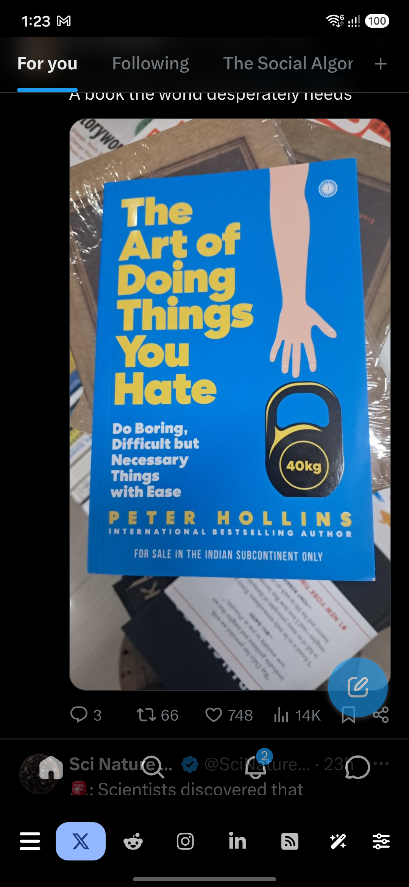
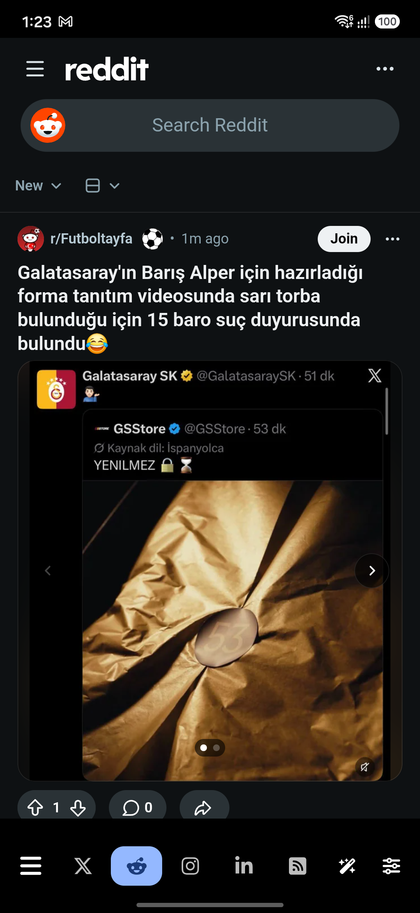
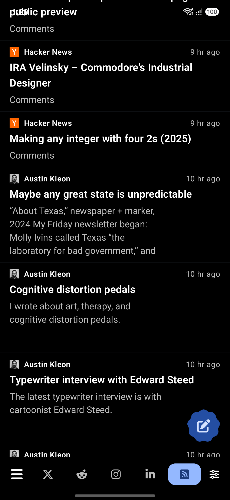
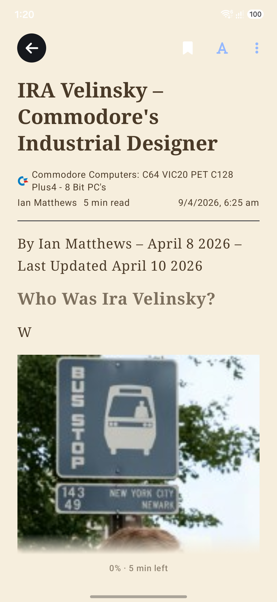
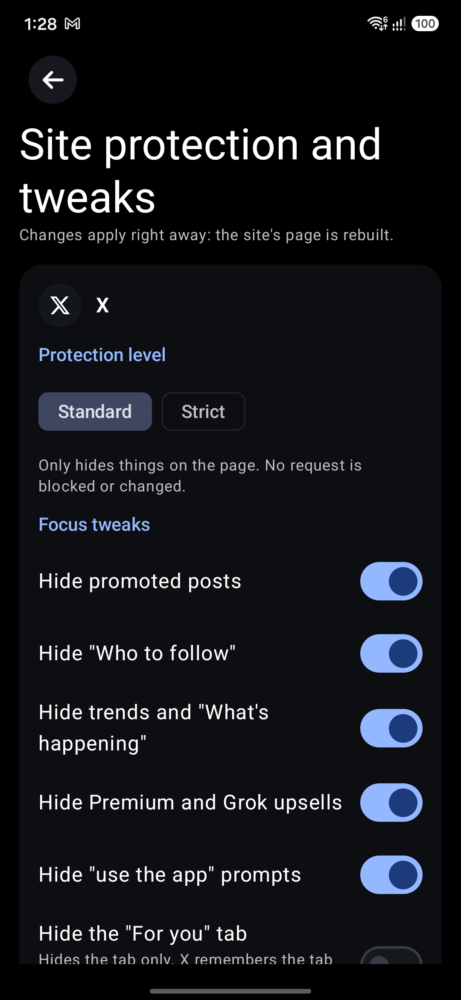
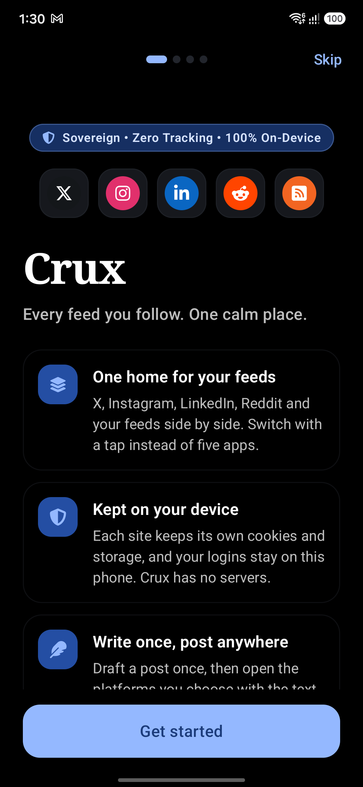

Clean, Focused, Sovereign






Why Crux?
Isolated Web Profiles
Instagram, X, LinkedIn, and Reddit each run in independent, sandboxed WebView data containers. Cookies, sessions, local storage, and trackers never touch one another.
Focus & Ad Tweaks
Display-level cleanups: hide Reels and Explore, "Who to follow" sections, promoted posts, and app-install banners. Block autoplay videos across every tab.
Native RSS Reader
Import OPML collections, follow your favorite blogs, and read articles with a distraction-free paged reader that remembers your exact reading position.
100% On-Device AI
Smart replies, rephrasing, and article summaries execute entirely on your phone hardware. Zero token costs, zero cloud data transfer, zero telemetry.
Tracking Stripper
Links opening from posts and articles are sanitized with all tracking parameters (utm_*, fbclid, etc.) removed, respecting your Global Privacy Control (GPC).
Zero Server Footprint
No accounts, no Crux server, no ads, no crashlytics, and Android cloud backup is disabled to guarantee your session tokens remain solely on your device.